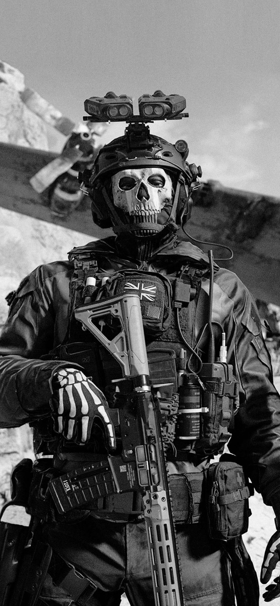
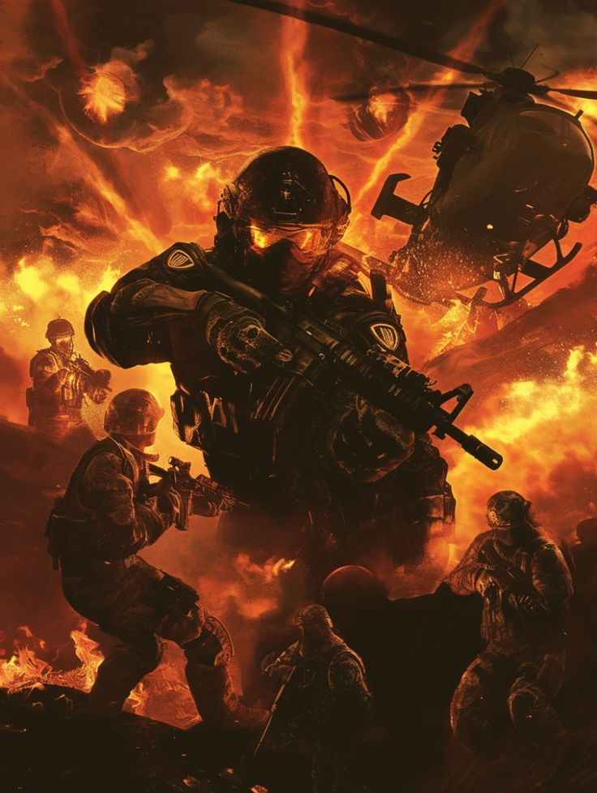
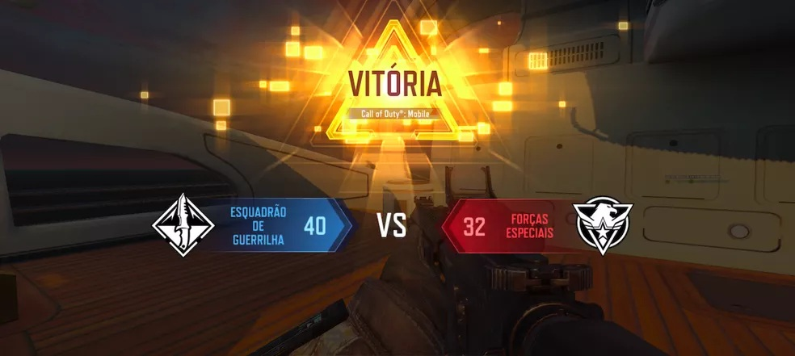

Creditos: Freepik
Nada representa melhor uma fuga cinematográfica do que uma perseguição de veículos em PUBG. Nesta imagem, um buggy tenta escapar de uma caminhonete armada, levantando poeira por uma estrada de terra. O caos, velocidade e sons dos disparos criam um clima de filme de ação, onde qualquer erro pode ser fatal.
A mobilidade é uma das chaves para sobreviver, especialmente quando o gás se aproxima ou quando o círculo fecha em terreno hostil. A perseguição entre veículos adiciona uma camada de imprevisibilidade ao jogo, mostrando que não basta ter boas armas — saber escapar e se reposicionar é essencial.

Creditos: Freepik
O combate urbano é um dos cenários mais intensos de Call of Duty. Prédios destruídos, ruas estreitas e tiroteios a curta distância fazem parte desse ambiente caótico. A imagem mostra jogadores trocando tiros em meio a escombros e veículos queimados.
Essas batalhas exigem reflexos rápidos e conhecimento do mapa. Usar o ambiente a seu favor, encontrar rotas alternativas e manter a atenção constante são essenciais para sobreviver e vencer nesse tipo de missão.

Creditos: Pinterest
Uma das coisas mais legais em Call of Duty é a personalização dos operadores. A imagem mostra um personagem com visual tático moderno, carregando uma arma totalmente customizada e acessórios de alta tecnologia, como drones e miras holográficas.
Essas opções de personalização permitem que cada jogador crie seu estilo único de combate. É possível adaptar o equipamento ao tipo de missão, seja focado em força bruta, precisão ou agilidade. Isso torna o jogo mais dinâmico e estratégico.

Creditos: Pinterest
As explosões em Call of Duty são cinematográficas e impactantes. A imagem mostra um momento de ação intensa, com uma explosão no centro de uma cidade enquanto os soldados correm para se proteger. Os efeitos visuais e sonoros aumentam a adrenalina do jogador.
Esse tipo de cena destaca o clima de guerra total que o jogo consegue reproduzir. As missões são pensadas para parecer filmes de ação, com sequências dramáticas que exigem reação rápida e decisões imediatas.

Creditos: Techtudo
Vencer uma partida no modo multiplayer é sempre uma conquista. A imagem mostra o time vencedor comemorando com suas skins personalizadas, em uma tela de vitória com destaque para o MVP. Esse momento é o reconhecimento de habilidade e trabalho em equipe.
O multiplayer de Call of Duty é competitivo, rápido e viciante. Ganhar partidas exige estratégia, boa pontaria e comunicação com o time. Essa imagem simboliza não só a vitória, mas todo o esforço envolvido para chegar até ela.
Voltar para o inicio